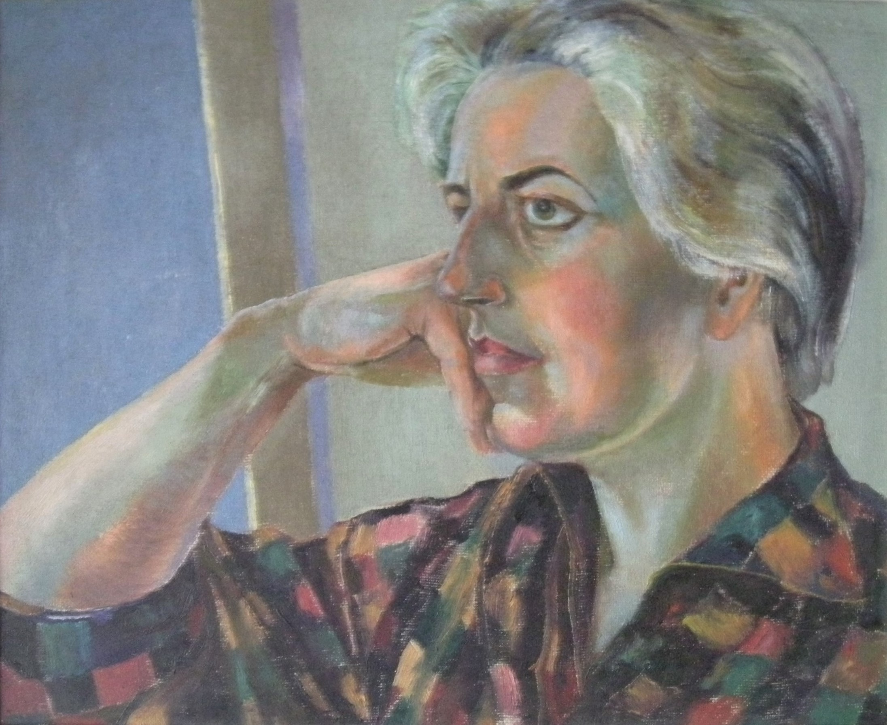

Esther Grainger
1912 – 1990
Artist Biography
Esther Grainger was born and mostly based in Cardiff, south Wales, where she studied at the School of Art, 1928–34. She became a painter, teacher and artist in embroidery and in the 1930s Grainger taught crafts to the wives of unemployed miners, later organising painting classes and exhibitions at the Pontypridd Settlement. There she met Cedric Morris, who taught her at his Benton End East Anglian School. In 1950 with David Bell of the Arts Council, Grainger organised the first open exhibition of paintings at the National Eisteddfod and was secretary for the Welsh Pictures for Schools shows. Grainger, known best for her landscapes and portraits, was a member of the South Wales Group of artists and the Watercolour Society of Wales. Numerous solo shows included exhibitions at the Newport Museum and Art Gallery in 1954, at the Canaletto Gallery in 1968, a retrospective at the Minories, Colchester in 1973, National Library of Wales in 1975, the Oriel Gallery Cardiff during 1976 and at Manor House Fine Arts, also in Cardiff, in 1990. As well as the Arts Council of Wales, the National Museum in Cardiff and the University of South Wales hold examples of Grainger's artwork.

Portrait of Elvic